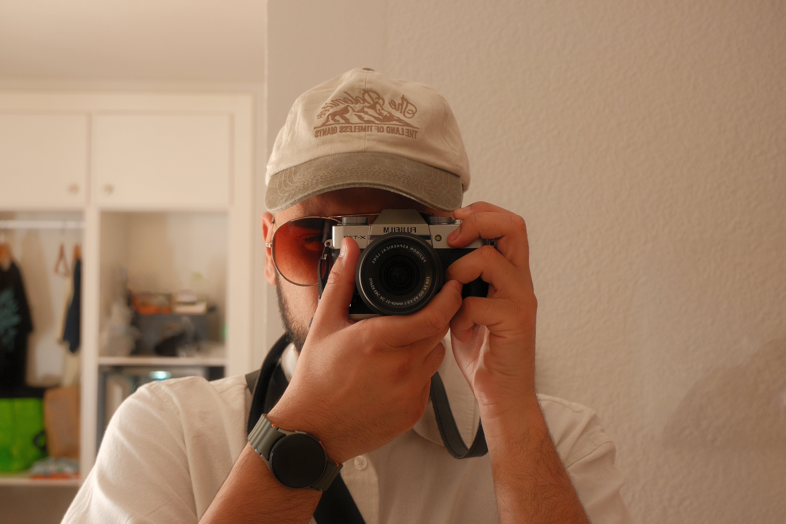

About Me

Hello, my name is Zayd Sidat. I am currently studying Business Information Technology and have a strong interest in technology, business intelligence, data analytics and digital transformation.
Alongside my passion for technology, I am an aspiring cinematographer who enjoys visual storytelling, filmmaking and creative content creation. I am fascinated by how both data analytics and cinematography can be used to tell compelling stories and create meaningful experiences.
My passion for both data analytics and cinematography allows me to combine analytical thinking with creativity, helping me develop innovative solutions that support business growth and engaging user experiences.
Professional Experience
Currys PLC
Working within sales and warehouse operations, supporting customers, providing product recommendations, managing inventory and assisting with logistics, repairs and returns.
Studio Lumiere
Supported studio operations, customer bookings and day-to-day business activities while gaining experience in a creative media environment.
Exam Invigilator
Responsible for safeguarding, confidentiality, organisation and professionalism while working under pressure.
Cinematography & Creative Media
Cinematography is one of my biggest passions. I enjoy learning about camera operation, lighting, composition, storytelling and post-production techniques.
My ambition is to continue developing my filmmaking skills while building a creative portfolio that showcases visual storytelling and professional media production.
Data Analytics & Technology

I am passionate about data analytics and understanding how organisations can use data to make informed decisions and improve performance.
Future Goals
My long-term ambition is to build a successful career in data analytics, business intelligence and digital transformation while continuing to develop my cinematography and creative media skills.
I aim to combine technical expertise with creativity to create innovative solutions, tell impactful stories and contribute to organisations embracing digital innovation.
Connect With Me
Feel free to connect with me on LinkedIn or Instagram to follow my professional journey and learn more about my interests in technology, data analytics and cinematography.